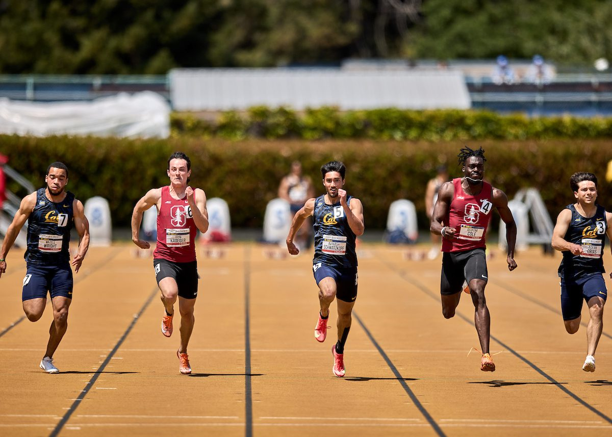
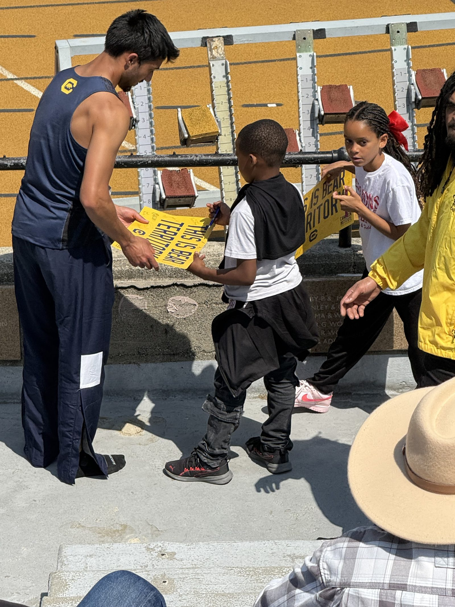
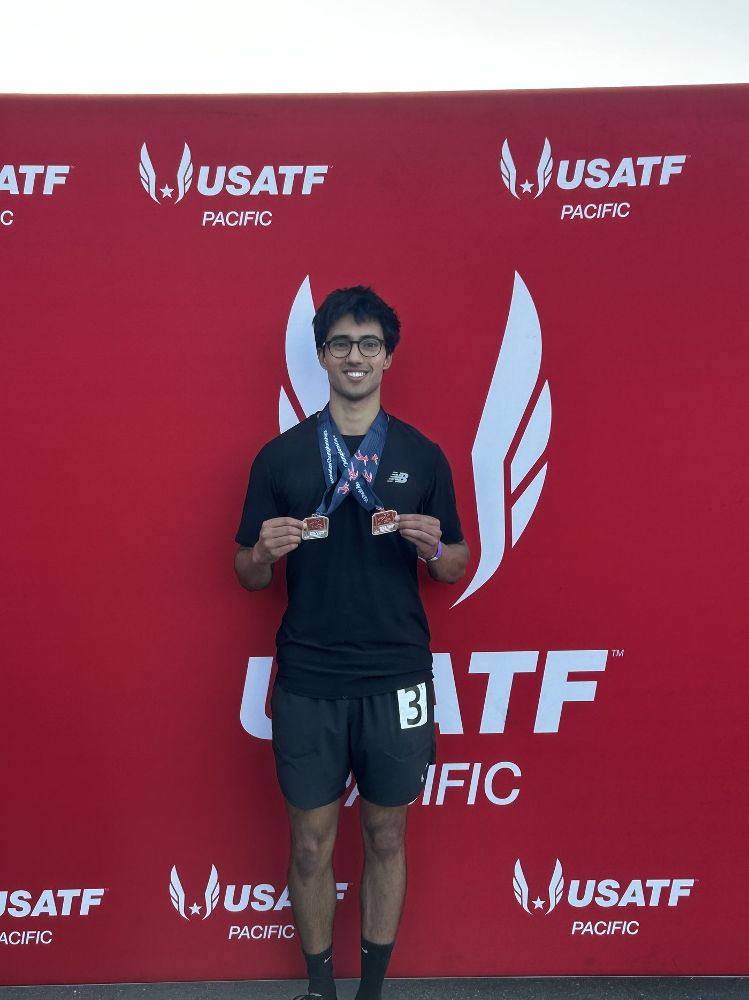

Track & Field
Walk-on to team captain at Cal. Sprints, 100 through 400.
Personal bests
| Event | Time | |
|---|---|---|
| 100m | 10.67 | PLACEHOLDER — year / meet |
| 200m | 21.20 | PLACEHOLDER — year / meet |
| 400m | 48.55 | PLACEHOLDER — year / meet |
Race footage

Coaching
I coach sprinters privately — high school athletes preparing for a season, college walk-ons, and adults who want to sprint properly. Sessions cover acceleration mechanics, top-speed work, race modeling, and the lifting that supports it.
PLACEHOLDER — rate, session length, where you train, and who this is for.

